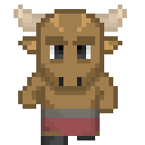

- Seu tipo é Monstrous Humanoid
- Tamanho: são criaturas médias, medindo entre 1,8m e 2,3m e pesando até 300kg
- STR +2, DEX -2, Wis +2, São fortes e disciplinados, mas não muito ágeis.
- Move: 9m
- Esperteza: recebem um bônus racial de +2 em testes contra efeitos de ação mental e efeitos que forem aprisioná-los, como uma Forcecage ou Imprison, eles também recebem um bônus de +2 em testes de INT para encontrar seu caminho por labirintos ou os efeitos da magia Maze
- Naturalista: Recebem um bônus de +2 em Knowledge (Nature) e podem fazer esse teste destreinados
- Armas Naturais pode usar um ataque de Gore como arma primária que causa 1d6 de dano
- Visão no Escuro:18m
- Corredores: considere o deslocamento 3m maior para a ação de corrida, recuar e investidas
- Idiomas: Minotauros falam Common e Giant, minotauros com autos valores de inteligência podem aprender: Aklo, Draconico, Anão, Élfico, Gnomo, Orc e Silvestre
Os Minotauros, Vivem em Demios, são o lado mais militar do reino, que é controlado por um Senado.

Variações da Raça: existem outras subespécies de Minotauros, como os Minotauros de Ymirgardr, que parecem Alces ou os de Koba, que se parecem com grandes Búfalos, mas exceto pela aparência, suas estatisticas são as mesmas.